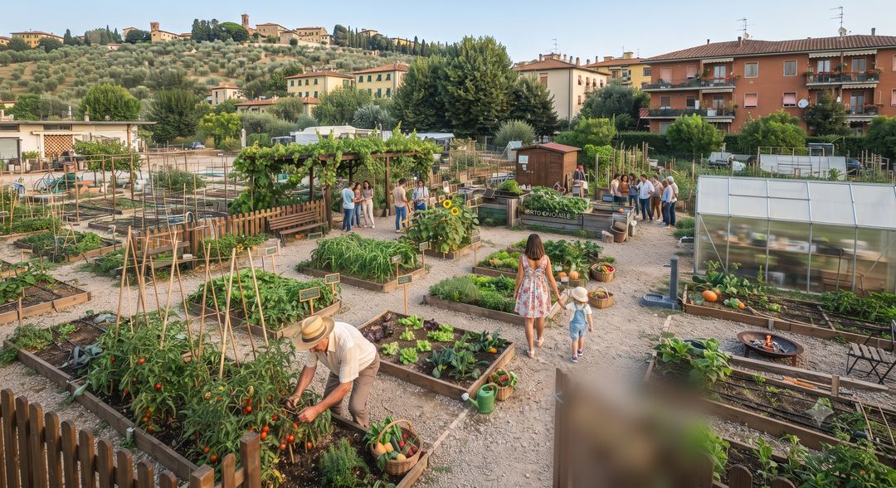
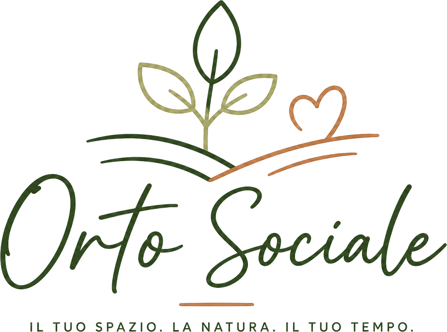
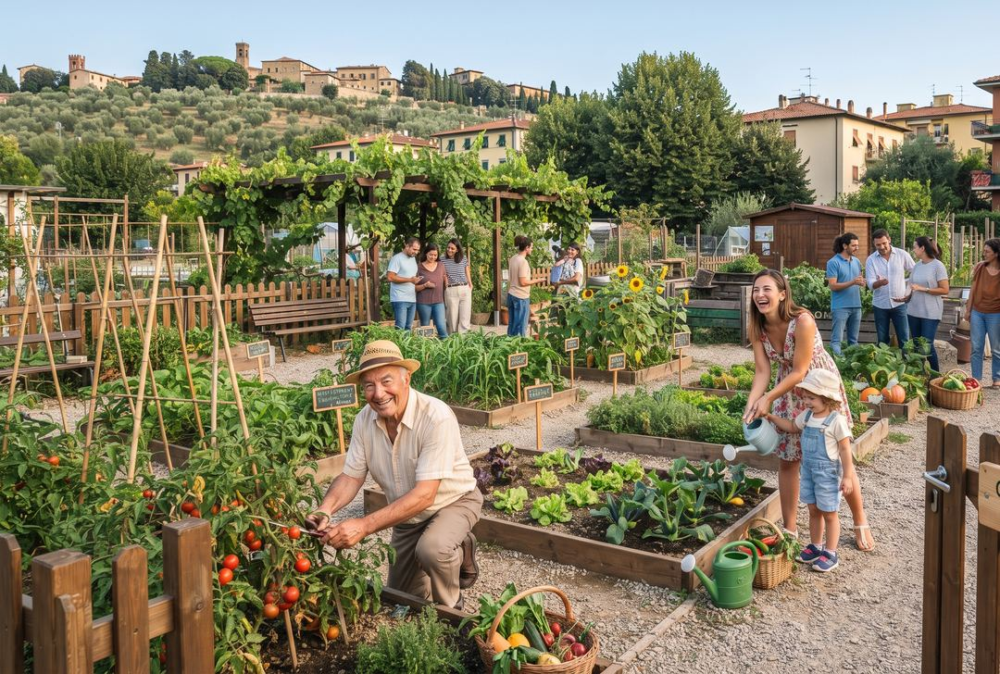

Terreno già pronto
Arato, concimato e delimitato: puoi seminare dal primo giorno, senza attrezzi pesanti.
Pescia · Valdinievole
Un appezzamento tutto tuo in un terreno già preparato, con acqua inclusa e due agricoltori al tuo fianco. Tu porta la voglia di sporcarti le mani: al resto pensiamo insieme.
1,2 mln
di italiani coltivano già un orto urbano
+18%
di orti urbani in Italia negli ultimi 5 anni
2,1 mln m²
di terreni urbani coltivati nel Paese
Fonti: Coldiretti · Pictet AM, "Orti urbani in Italia"
Semplice davvero
Dal primo sopralluogo al primo raccolto: quattro passaggi, zero pensieri.
Vieni a trovarci con una visita gratuita: ti mostriamo il terreno e gli spazi ancora disponibili.
Un accordo semplice e trasparente, senza sorprese: sai da subito cosa è incluso e quanto spendi.
Trovi il terreno già lavorato, concimato e pronto per la semina, con l'acqua a portata di mano.
Semina, cura e raccogli con i consigli degli agricoltori, ogni volta che ne hai bisogno.
Non solo un pezzo di terra
Un orto senza pensieri, in un luogo curato dove il tempo rallenta e la natura torna protagonista.
Arato, concimato e delimitato: puoi seminare dal primo giorno, senza attrezzi pesanti.
Punti d'acqua vicini a ogni appezzamento, compresi nel prezzo: irrigare non è mai un problema.
Non sai da dove iniziare? Ti guidiamo noi: semine, trapianti, potature e piccoli trucchi del mestiere.
Vialetti, siepi e spazi condivisi sempre in ordine: del taglio e delle pulizie ci occupiamo noi.
Area recintata, accessi riservati agli ortisti e parcheggio: perfetta anche per bambini e nonni.
Vicini di orto con la tua stessa passione: ci si scambia semi, consigli e qualche cassetta di verdura.
Scegli la tua misura
Tre tagli di appezzamento, tutti con acqua, supporto agricolo e accesso ai servizi inclusi.
≈ 30 m²
Perfetto per iniziare: insalate, pomodori e aromatiche per 1–2 persone.
290 €/anno
Il più scelto
≈ 50 m²
La verdura di stagione per tutta la famiglia, con spazio per sperimentare.
420 €/anno
≈ 80 m²
Per chi fa sul serio: autoproduzione vera, conserve comprese.
590 €/anno
Prezzi indicativi di lancio. Gli appezzamenti sono limitati: scrivici per conoscere dimensioni e disponibilità aggiornate.
Tutto compreso
Il bello dell'orto senza le complicazioni: le cose pesanti, noiose o tecniche le facciamo noi.

Due fratelli, una terra
Siamo i fratelli Maltagliati, agricoltori a Pescia, nel cuore della Valdinievole. La nostra famiglia lavora queste terre da generazioni: le conosciamo zolla per zolla, stagione per stagione.
Orto Sociale nasce da un'idea semplice: la terra dà il meglio quando è condivisa. Sempre più persone vorrebbero coltivare qualcosa di proprio, ma non hanno un terreno, gli attrezzi o qualcuno che insegni loro come si fa. Noi abbiamo tutte e tre le cose — e la voglia di rimettere le persone in contatto con la natura.
«Non affittiamo pezzi di terra. Apriamo il cancello di casa nostra a chi vuole tornare a coltivare.»

La vita all'orto

Parola di ortista
Vivo in appartamento da vent'anni. Adesso la domenica mattina raccolgo i miei pomodori: non ha prezzo.
Non avevo mai piantato niente in vita mia. Con i consigli giusti al primo tentativo è andato tutto bene.
I bambini hanno visto nascere una zucchina. Ora la verdura la mangiano senza discutere.
Dubbi? Normale
Sì: il tuo appezzamento è tuo e decidi tu cosa piantare. Gli agricoltori ti consigliano le varietà più adatte alla stagione e al terreno, ma la scelta finale è sempre la tua.
Tu. Il nostro compito è supportarti: ti suggeriamo cosa funziona meglio in ogni periodo dell'anno e ti aiutiamo a impostare le semine, ma l'orto resta personale al 100%.
Nessun problema: puoi accordarti con noi o con altri ortisti per l'irrigazione durante la tua assenza. È uno dei vantaggi di far parte di una comunità.
Certo, anzi: l'orto è un'esperienza bellissima per i bambini. L'area è recintata e sicura, e imparare da dove arriva il cibo è la lezione più bella che possano ricevere.
I cani sono benvenuti al guinzaglio nelle aree comuni, nel rispetto degli altri ortisti e delle coltivazioni.
Sì, sono ammesse piccole serre e tunnel stagionali all'interno del tuo appezzamento. Ti aiutiamo noi a montarla nel modo giusto.
Per un orto di 30 m² bastano 2–3 ore a settimana nei periodi di punta. Con il terreno già lavorato e l'acqua a portata di mano, il grosso della fatica lo abbiamo già fatto noi.
Ti aspettiamo tra i filari
Prenota una visita gratuita: ti accompagniamo tra gli appezzamenti, rispondiamo a ogni domanda e — se ti innamori di un pezzo di terra — te lo teniamo da parte.
Due passi da casa
Scrivici quando vuoi: rispondiamo noi, non un centralino.